平安蜀黍的前端教程 > 备选知识点 > 安装 iterm 2
之前一直使用 Mac OS 自带的终端，用起来虽然有些不太方便，但总体来说还是可以接受的。后来在 b 站学习的时候，看到同行们用的都不是终端，查了下是 iTerm2，发现真的很强大，也非常的好用，于是上网搜索了主题配置什么的，踩了些坑，在这里记录下来，方便后面再装的时候又需要去搜索。
安装 iTerm2
应用下载地址：https://www.iterm2.com/downloads.html
下载的是压缩文件，解压后是执行程序文件，你可以直接双击，或者直接将它拖到 Applications 目录下。
也可以直接使用 Homebrew 进行安装：
$ brew cask install iterm2
配置 iTerm2 主题
iTerm2 最常用的主题是 Solarized Dark theme，下载地址：http://ethanschoonover.com/solarized
下载的是压缩文件，你先解压一下，然后打开 iTerm2，按 Command + ,键，打开 Preferences 配置界面，然后 Profiles -> Colors -> Color Presets -> Import，选择刚才解压的 solarized->iterm2-colors-solarized->Solarized Dark.itermcolors 文件，导入成功，最后选择 Solarized Dark 主题，就可以了。
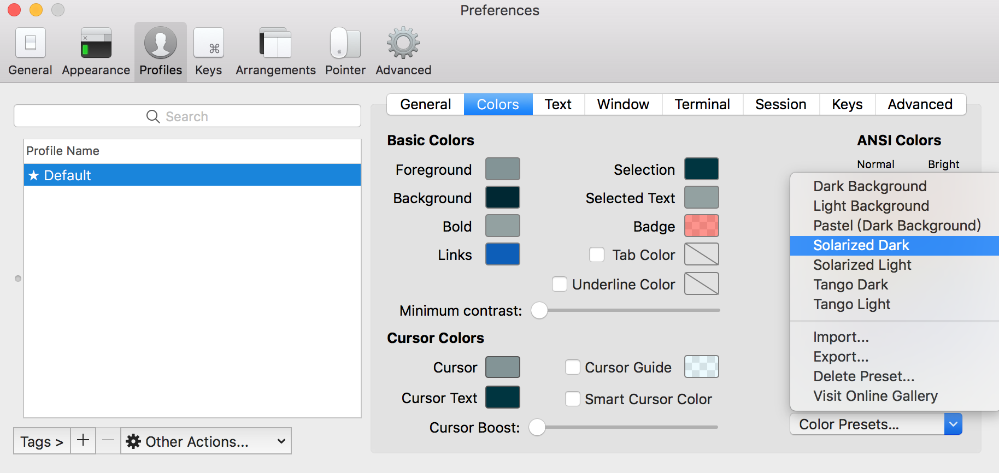
配置 Oh My Zsh
Oh My Zsh 是对主题的进一步扩展，地址：https://github.com/robbyrussell/oh-my-zsh
一键安装：
$ sh -c "$(curl -fsSL https://raw.github.com/robbyrussell/oh-my-zsh/master/tools/install.sh)"
安装好之后，需要把 Zsh 设置为当前用户的默认 Shell（这样新建标签的时候才会使用 Zsh）：
$ chsh -s /bin/zsh
然后，我们编辑 vim ~/.zshrc 文件，将主题配置修改为
ZSH_THEME="agnoster"。
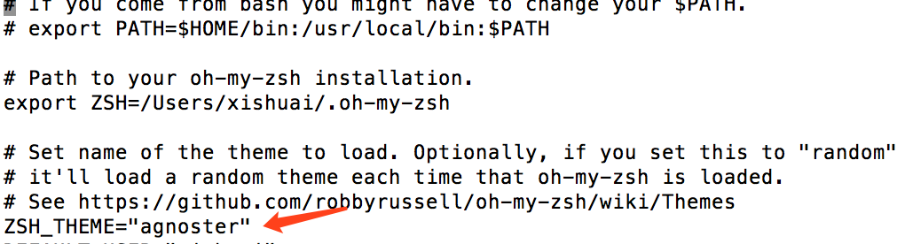
agnoster 是比较常用的 zsh 主题之一，当然你可以挑选你喜欢的主题，zsh 主题列表：https://github.com/robbyrussell/oh-my-zsh/wiki/themes
效果如下（配置了声明高亮）：
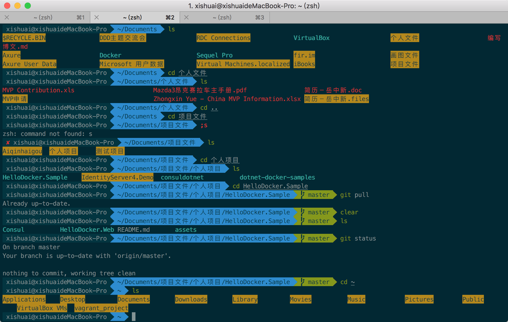
配置 Meslo 字体
使用上面的主题，需要 Meslo 字体支持，要不然会出现乱码的情况，字体下载地址：Meslo LG M Regular for Powerline.ttf。下载好之后，直接在 Mac OS 中安装即可。然后打开 iTerm2，按 Command + ,键，打开 Preferences 配置界面，然后 Profiles -> Text -> Font -> Chanage Font，选择 Meslo LG M Regular for Powerline 字体。
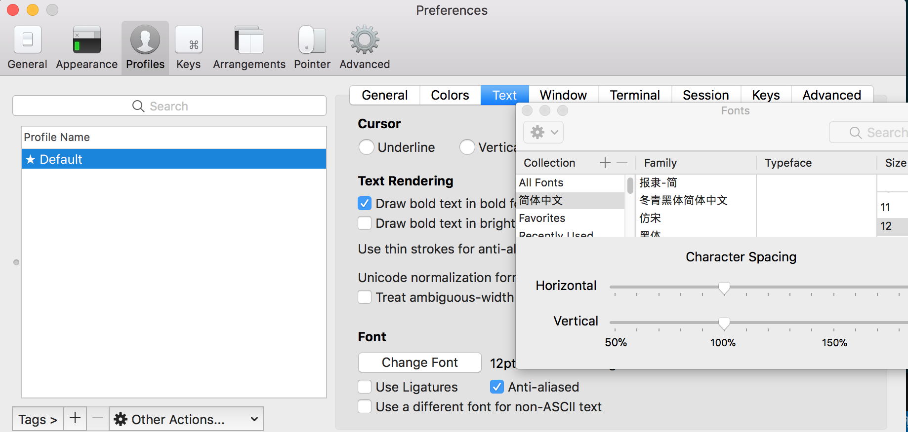
当然，如果你觉得默认的 12px 字体大小不合适，可以自己进行修改。
另外，VS Code 的终端字体，也需要进行配置，打开 VS Code，按 Command + ,键，打开用户配置，搜索 fontFamily，然后将右边的配置增加
"terminal.integrated.fontFamily": "Meslo LG M for Powerline"
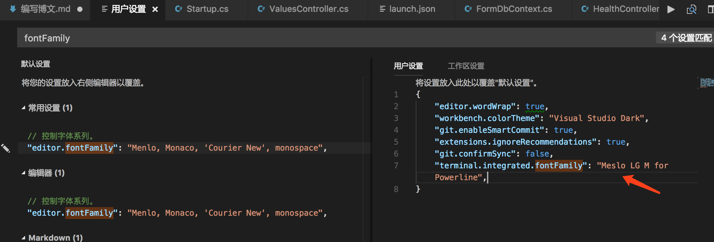
声明高亮
效果就是上面截图的那样，特殊命令和错误命令，会有高亮显示。 使用 Homebrew 安装：
$ brew install zsh-syntax-highlighting
安装成功之后，编辑 vim ~/.zshrc 文件，在最后一行增加下面配置：
source /usr/local/share/zsh-syntax-highlighting/zsh-syntax-highlighting.zsh
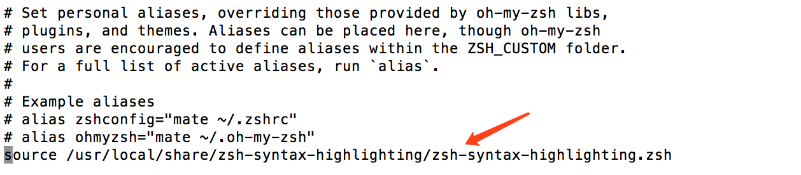
自动建议填充
这个功能是非常实用的，可以方便我们快速的敲命令。 配置步骤，先克隆 zsh-autosuggestions 项目，到指定目录：
$ git clone https://github.com/zsh-users/zsh-autosuggestions ~/.oh-my-zsh/custom/plugins/zsh-autosuggestions
然后编辑 vim ~/.zshrc 文件，找到 plugins 配置，增加 zsh-autosuggestions 插件。
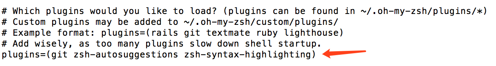
注：上面声明高亮，如果配置不生效的话，在 plugins 配置，再增加 zsh-syntax-highlighting 插件试试。 有时候因为自动填充的颜色和背景颜色很相似，以至于自动填充没有效果，我们可以手动更改下自动填充的颜色配置，我修改的颜色值为：586e75，
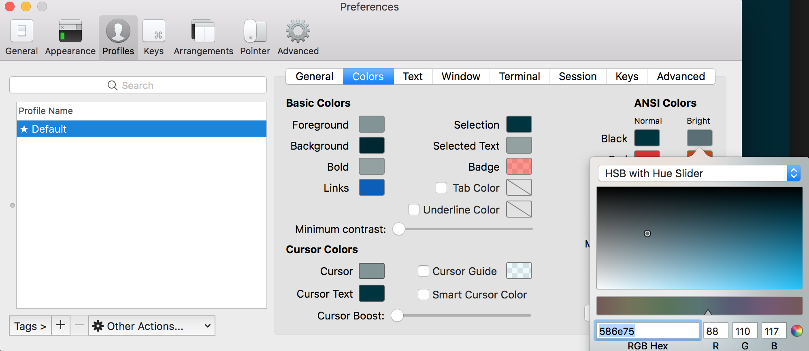
左右键跳转
主要是按住 option + → or ← 键，在命令的开始和结尾跳转切换，原本是不生效的，需要手动开启下。 打开 iTerm2，按 Command + ,键，打开 Preferences 配置界面，然后 Profiles → Keys → Load Preset... → Natural Text Editing，就可以了。
iTerm2 快速隐藏和显示
这个功能也非常使用，就是通过快捷键，可以快速的隐藏和打开 iTerm2，示例配置（Commond + .）
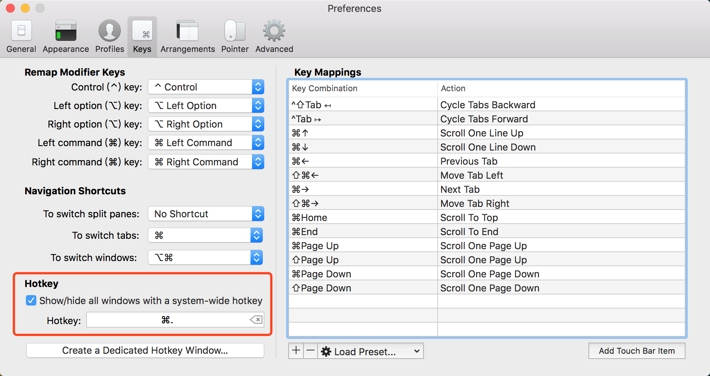
iTerm2 隐藏用户名和主机名
有时候我们的用户名和主机名太长，比如我的 xishuai@xishuaideMacBook-Pro，终端显示的时候会很不好看（上面图片中可以看到），我们可以手动去除。 编辑 vim ~/.zshrc 文件，增加 DEFAULT_USER="xishuai"配置，示例： 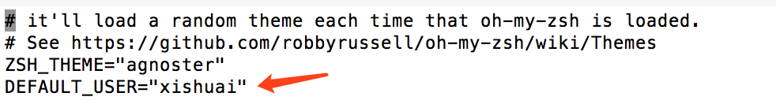
我们可以通过 whoami 命令，查看当前用户，效果（另外分屏的效果）：
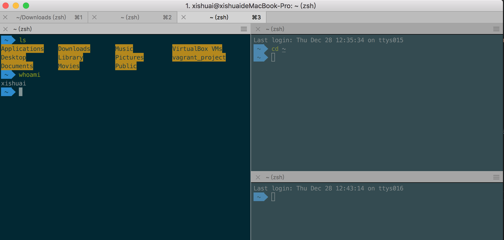
iTerm2 配置代理
编辑~ vim ~/.zshrc，增加下面配置（使用的 shadowsocks）：
# proxy list
alias proxy='export all_proxy=socks5://127.0.0.1:1086'
alias unproxy='unset all_proxy'
iTerm2 需要新建标签页，才有效果：
$ proxy
$ curl ip.cn
# 当前 IP：185.225.14.5 来自：美国
$ unproxy
$ curl ip.cn
# 当前 IP：115.236.186.130 来自：浙江省杭州市 电信
我们可以测试下：
$ curl https://packages.cloud.google.com/yum/repos/kubernetes-el7-x86_64
<html>
<head>
<title>Directory listing for /yum/repos/kubernetes-el7-x86_64/</title>
</head>
<body>
<h2>Index of /yum/repos/kubernetes-el7-x86_64/</h2>
<p></p>
<a href="/yum/repos/kubernetes-el7-x86_64/repodata">repodata</a><br />
</body>
</html>
iTerm2 常用快捷键
| 快捷键 | 功能 |
|---|---|
| command + t | 新建标签 |
| command + w | 关闭标签 |
| command + 数字 | |
| command + 左右方向键 | 切换标签 |
| command + enter | 切换全屏 |
| command + f | 查找 |
| command + d | 垂直分屏 |
| command + shift+ d | 水平分屏 |
| command + option | + 方向键 切换屏幕 |
| command + [ 或 command + ] | 代码缩进 |
| command + ; | 查看历史命令 |
| command + shift+ h | 查看剪贴板历史 |
| ctrl + u | 清除当前行 |
| ctrl + l | 清屏 |
| ctrl + a | 到行首 |
| ctrl + e | 到行尾 |
| ctrl + f/b | 前进后退 |
| ctrl + p | 上一条命令 |
| ctrl + r | 搜索命令历史 |
参考资料：
iTerm2 + Oh My Zsh + Solarized color scheme + Meslo powerline font + [Powerlevel9k] - (macOS)（推荐）
iTerm2 + oh my zsh + solarized + Meslo powerline font (OS X / macOS)